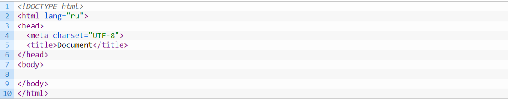
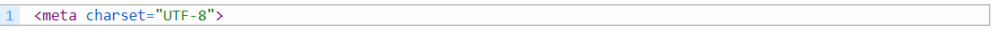

HTML(HyperText Markup Language) – це мова гіпертекстової розмітки. Мова розмітки використовується для надання структури інтернет-сторінці, сайту. Мова розмітки не несе у собі оформлення, а виконує завдання структурування. Структура задається за допомогою спеціальних елементів - міток, зрозумілих браузеру. Ці позначки називаються тегами – від англ. слова tag - іменована мітка.
Гіпертекст – це документ, розмітка якого виконана за допомогою мови HTML. Термін "гіпертекст" спочатку був введений Тедом Нельсоном для позначення тексту, "який розгалужується сам по собі або виконує дію на запит".
HTML документ – це типовий текстовий файл, який має спеціальну структуру. При відкритті інтернет-браузер обробляє цей документ, внаслідок чого ми з вами бачимо звичні для нас інтернет-сторінки, де є текст, картинки, посилання тощо. Інтернет-сторінки мають розширення – html.
Рассмотрим структуру простого HTML документа:
Строка <html> называется тегом. Вообще, все, что заключено в символы < > называется тегом. Данные символы — служебные в языке HTML. Теги бывают двух видов:
- Парні - дані теги мають тег, що відкривається і закривається. Тег, що закривається, містить знак похилої риси. Між даними тегами міститься вміст тега. Вміст тега може бути як звичайний текст, так і інші вкладені теги. Приклади парних тегів: <html> </html>
- Непарні – теги, які не закриваються. Приклад: <br>
Вважається хорошим тоном знати та вміти оперувати великою кількістю тегів. Цього не потрібно лякатися, все запам'ятається і впаде в голову, як тільки ви почнете застосовувати свої знання на практиці. З основними тегами ми познайомимося під час подальшого навчання. А взагалі, в інтернеті зараз доступна величезна кількість. довідників з HTML, де ви зможете знайти актуальну інформацію, адже прогрес не стоїть на місці, а мови програмування стрімкими тепами розвиваються і практично кожні півроку виходять оновлення. Також, мінімум тегів, які будуть необхідні нам під час навчання, ви знайдете в нашій шпаргалці.
Рассмотрим структуру HTML документа:
- <!DOCTYPE html> — що це за тег такий? Це версія HTML, яка використовується в даній сторінці. Подібним тегом прийнято розпочинати всі HTML-документи. Це вважається добрим тоном. DOCTYPE вказує браузеру в якій версії HTML був написаний документ, щоб всі браузери (а їх зараз багато) могли правильно обробити розмітку і відобразити вміст документа. Якщо цього не зробити, браузер за замовчуванням некоректно визначить версію документа, в результаті чого вся розмітка може поїхати і неправильно відображатись у різних браузерах. У разі DOCTYPE вказує на версію HTML5
- <HTML> </HTML> — весь вміст сторінки укладено між парними тегами, які інформують браузер, що це HTML сторінка.
- <head> </head> -службова секція (заголовок), яка використовується для підключення зовнішніх файлів, та установок, що відповідають за вигляд, виведення та роботу даної сторінки. Вміст її найчастіше не відображається на сторінці, крім тега title. Тег title – містить заголовок сторінки, який відображається у вкладці.
- <body> </body> - все, що відображається на сторінці, пишеться в тезі body.
Для розширення функціоналу HTML у тегах додають спеціальну інформацію, яка називається атрибутами. Так у рядку:
charset="UTF-8" - атрибут. Атрибутів може бути багато. Атрибути пишуться через пропуск. В даному випадку, за допомогою тега meta HTML сторінці вказується кодування UTF-8. Тобто. браузеру вказується кодування цього документа для правильного відображення вмісту сторінки.
Атрибути використовуються для розширення функціоналу тегів і дозволяють модифікувати як способи відображення тегів на сторінці, так і їхню поведінку. Не всі теги використовуються для виведення інформації, є теги, які використовуються тільки для програмування поведінки сторінки, наприклад, за допомогою JavaScript.
Також:
- Структура коду
- Нові теги
- Приклад додавання стилів тегу header
- Тег <article>
- Тег <footer>
- Тег <nav>
- Тег <section>
- Тег <time>
- Макет сайту
- Шапка сторінки
- Основна частина
- Підвал сторінки
- Головна сторінка
- Внутрішня сторінка
- Висновок